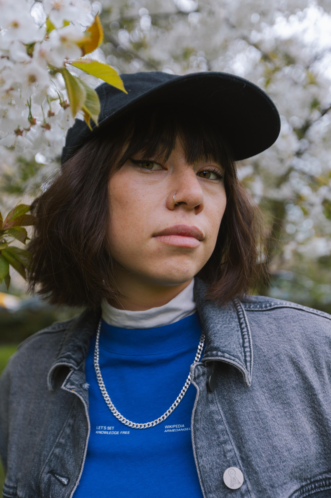

Tori
Tsui
media & impact
From a fishing town in northeast Hong Kong to organising a benefit concert at Wembley Arena, twelve milestones in one of the most remarkable activist careers of her generation.


Named an Agent of Change in the FW19 campaign narrated by Jane Goodall, written by Jonathan Safran Foer.

Joined 36 young delegates on a transatlantic crossing, then spent four months in Latin America after COP25 was relocated.

Led a global campaign asking David Attenborough to hand his 6.1M-follower Instagram to frontline activists. Covered by BBC My World, Euronews and 15+ countries.

Featured in Billie Eilish's climate documentary. Invited by Emma Watson to the NYT Climate Hub with Greta Thunberg, Malala Yousafzai, Amanda Gorman, Vanessa Nakate.

Joined the Fossil Fuel Non-Proliferation Treaty Initiative. Began advisory role with Brian Eno's EarthPercent, bridging climate justice and the music industry.

Chosen by Billie Eilish to appear on the Vogue cover alongside seven other climate activists, at the intersection of music and climate.

Debut book reframes eco-anxiety as a structural mental health crisis. Waterstones Book of the Year. British Vogue 25. ELLE Green List.
Promoted to Senior Advisor at FFNPT, overseeing comms and champions strategy globally. Shortlisted for the Wainwright Prize. Inaugural Climate Fiction Prize judge.

The Court of Session ruled the UK government's approval of the Rosebank oil field unlawful. A clip from Tori's appearance on The Tea with Dr Myriam François generated 12 million Instagram views.

Invited on stage at Co-op Live to address 15,000 fans on World Environment Day, after Andy Burnham signed the Treaty Declaration that morning.

Helped organise Brian Eno's benefit concert at OVO Arena Wembley. Performers: PinkPantheress, James Blake, Jamie xx, Damon Albarn, Bastille, Sampha.

US paperback published by The New Press, timed for Earth Day, with a new foreword by Leah Thomas, founder of Intersectional Environmentalist.